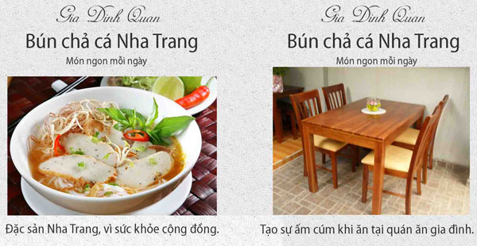
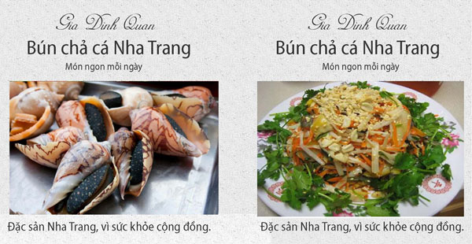
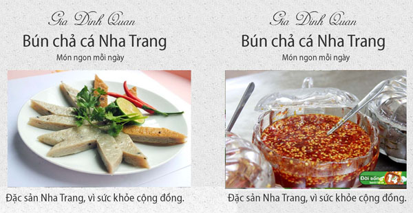
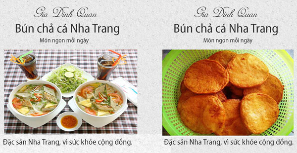

Quán chả cá Nha Trang
Chả cá Nha Trang làm từ cá là, cá môi hoặc cá đỏ nạo lấy thịt trộn cùng hành, tỏi, tiêu, gia vị và quết nhuyễn.
Chả cá Nha Trang chiên hoặc hấp ăn liền, được làm từ cá tươi, hương vị thơm ngon, không chất bảo quản, không hàn the, đảm bảo vệ sinh an toàn thực phẩm.

Nguyên liệu từ vùng biển Nha Trang
Chả cá tươi Nha Trang làm từ cá tươi nạo lấy thịt trộn cùng hành, tỏi, tiêu, gia vị và quết nhuyễn.
Sản phẩm sạch, vệ sinh
Sản phẩm không trộn bột, không hàn the, không chất bảo quản, phù hợp tiêu chuẩn vệ sinh an toàn thực phẩm.
Chả cá có vị đặc trưng
Chả cá khi chế biến có đặc trưng dai, mềm và ngọt vị cá, càng đậm đà hơn nếu chấm một chút nước mắm ớt tỏi đặc.

Chế biến với nhiều món ngon
Có thể chế biến thành nhiều món ăn thơm ngon, hấp dẫn khác nhau như hấp, chiên hay là nguyên liệu chính cho món bánh canh, bún cá…

Đặc sản chả cá Nha Trang
Khi đặt chân đến Nha Trang, du khách không những ngỡ ngàng, chìm đắm trước những bãi biển xanh thẳm, bờ cát dài trắng phau mà còn trầm trồ khen gợi trước đặc sản nổi tiếng của vùng đất này, đó chính là chả cá.
Nguyên liệu từ chả cá Nha Trang
Chả cá Nha Trang nổi tiếng ngon vì làm từ cá tươi. Cá tươi nạo lấy thịt trộn cùng hành, tỏi, tiêu, gia vị và quết thật nhuyễn, càng nhuyễn càng dai.